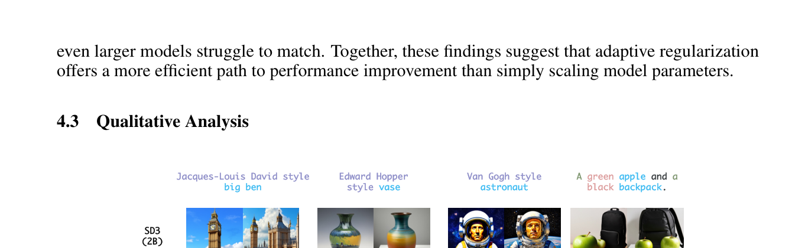
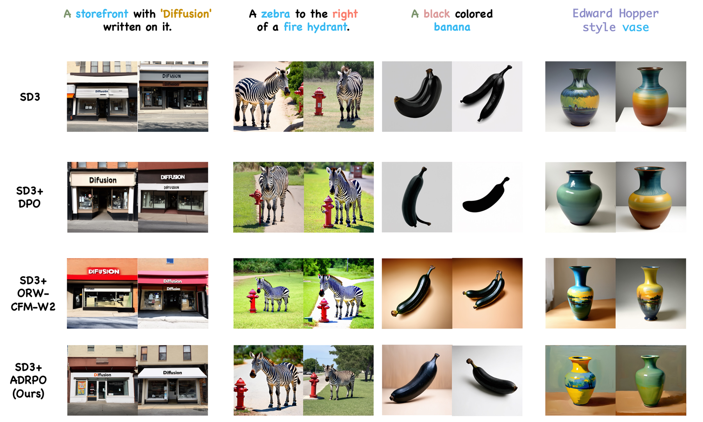
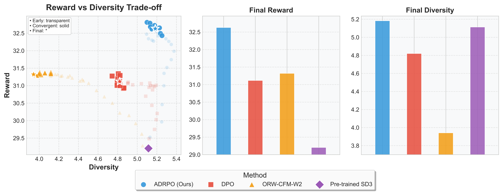
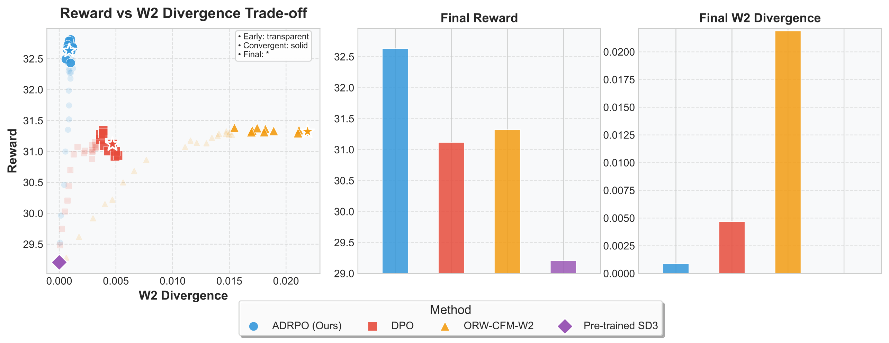
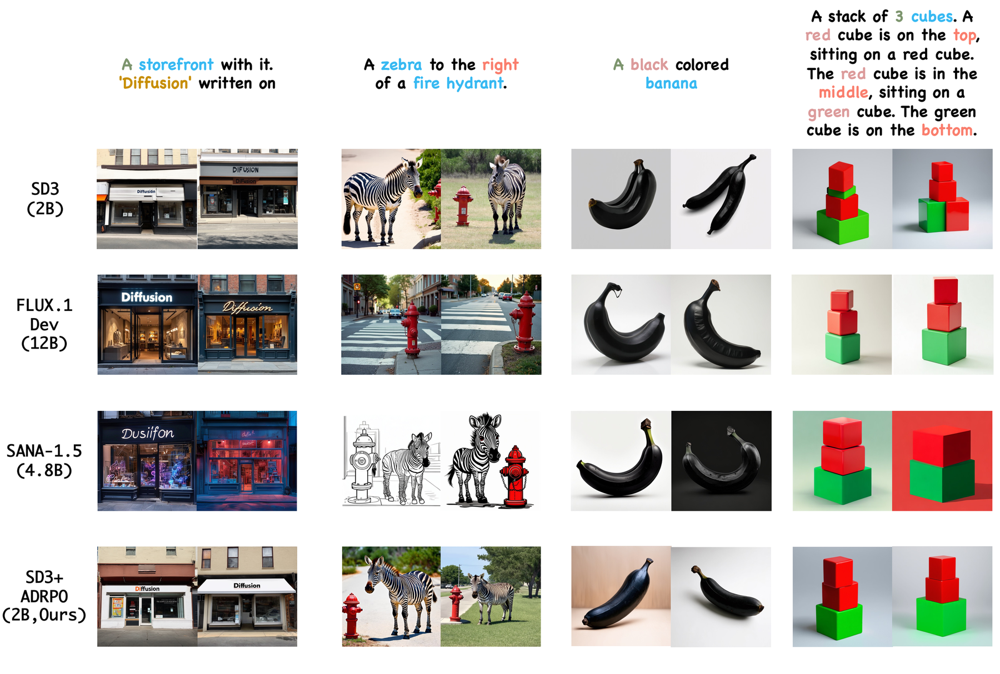
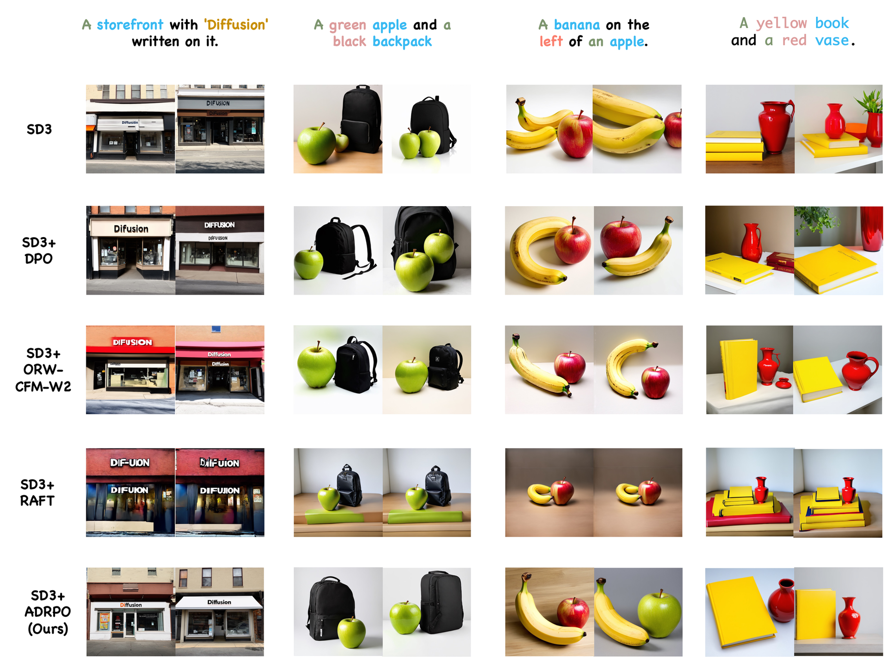
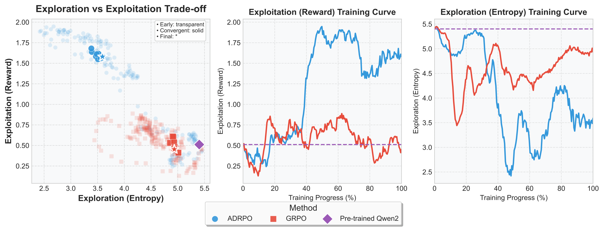
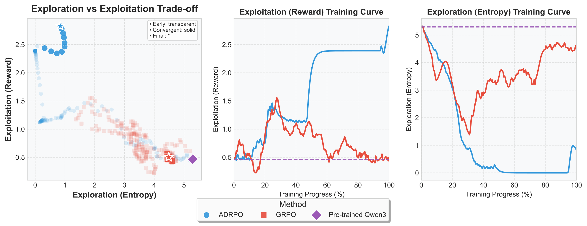

💡 Key Insight
Not all samples should be treated equally
Existing RLHF methods apply the same divergence regularization to every sample. ADRPO observes that high-advantage samples (clearly better than baseline) deserve less regularization to fully exploit their quality, while low-advantage samples need stronger regularization to prevent harmful policy updates. This simple principle unlocks significantly better exploration-exploitation trade-offs.
❌ Fixed Regularization (ORW-CFM-W2 / PPO)
- Same regularization for all samples
- Strong KL → conservative, slow progress
- Weak KL → reward hacking / collapse
- Manual KL coefficient tuning required
✅ ADRPO (Ours)
- Adaptive KL based on advantage estimates
- High-value samples explore more freely
- Poor samples kept on a short leash
- Plug-and-play — no extra networks
🌐 Generalization
ADRPO is a universal plug-in that generalizes across different model types and modalities:
🌊 Flow/Diffusion Models (SD3) 🧠 Text LLMs (GRPO) 🎵 Audio LLMs
In LLM fine-tuning, ADRPO shows an emergent ability to escape local optima through active exploration. In multimodal audio reasoning, it outperforms GRPO through superior step-by-step reasoning.
📊 Results
4.8B & 12B models
in alignment & diversity
(fixed regularization)
(plug-and-play)
Evaluated on text-to-image generation tasks: attribute binding, semantic consistency, artistic style transfer, and compositional control.

📈 Reward–Diversity Tradeoff

⚖️ Reward vs. Diversity Analysis
The core insight: fixed-KL methods force a single regularization strength across all samples. ADRPO adaptively adjusts — easy samples get tighter control, hard samples get more freedom.


🎨 More Qualitative Results


🧠 Generalization to LLMs
ADRPO is not limited to image generation — it generalizes to LLM fine-tuning tasks. Tested on Qwen2 and Qwen3:


📅 Publication Journey
📖 BibTeX
@inproceedings{fan2025adaptive,
title={Adaptive Divergence Regularized Policy Optimization
for Fine-tuning Generative Models},
author={Jiajun Fan and Tong Wei and Chaoran Cheng
and Yuxin Chen and Ge Liu},
booktitle={The Thirty-ninth Annual Conference on
Neural Information Processing Systems},
year={2025},
url={https://openreview.net/forum?id=aXO0xg0ttW}
}